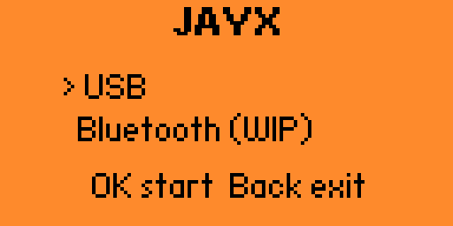

Turn your Flipper Zero into an external hardware dashboard. Stream CPU, RAM, GPU, temperatures, system specifications, and live game FPS over USB. Zero lag, customizable, and completely open source.

Interactive Flipper Simulator: Click the D-Pad buttons above to browse the device views. Press Left / Right to change screens; press Up / Down on the Specs screen to cycle hardware cards.
Everything JAYX tracks — CPU, RAM, GPU, FPS, and hardware specs — plus a live console preview.
Setup Guide →Step-by-step install: prerequisites, building the Flipper app, running the PC agent, and optional extras.
Troubleshooting →Common issues like stuck connections, locked COM ports, and missing FPS/temperature readings.
JAYX is 100% free and open-source under the MIT license. Check it out on GitHub to view code, contribute, or open issues.